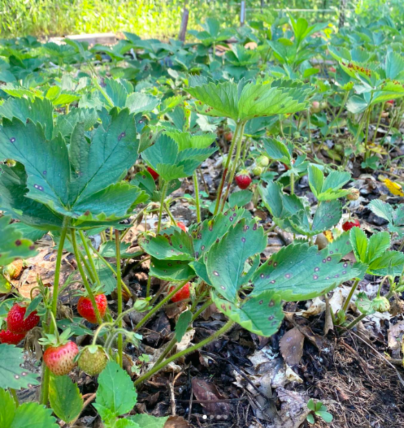
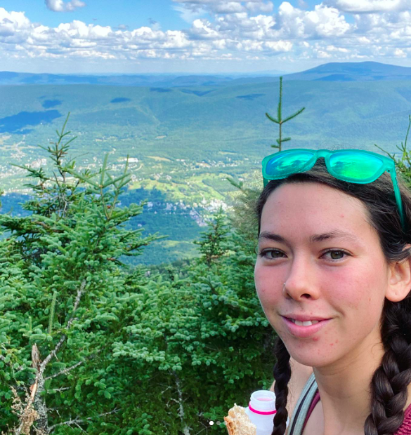

When I'm not learning to code I enjoy playing music, hiking, gardening, and spending time with our 1 year old daughter!
Playing Music
I play percussion and fiddle for orchestras and musical groups of all different types! Here I am playing marimba at Fenway park in Boston. I also played the fiddle for contradances when I lived in New England
Farming/Gardening
I love to grow food and have worked on farms in Vermont, New Hampshire, and Minnesota. I have gardened for 10 years and grown all kinds of produce from tomatoes to birdhouse gourds!
Hiking

I have enjoyed hiking and camping across the United States in places where I've lived and visited, such as Minnesota, Montana, New Mexico, and all around New England!